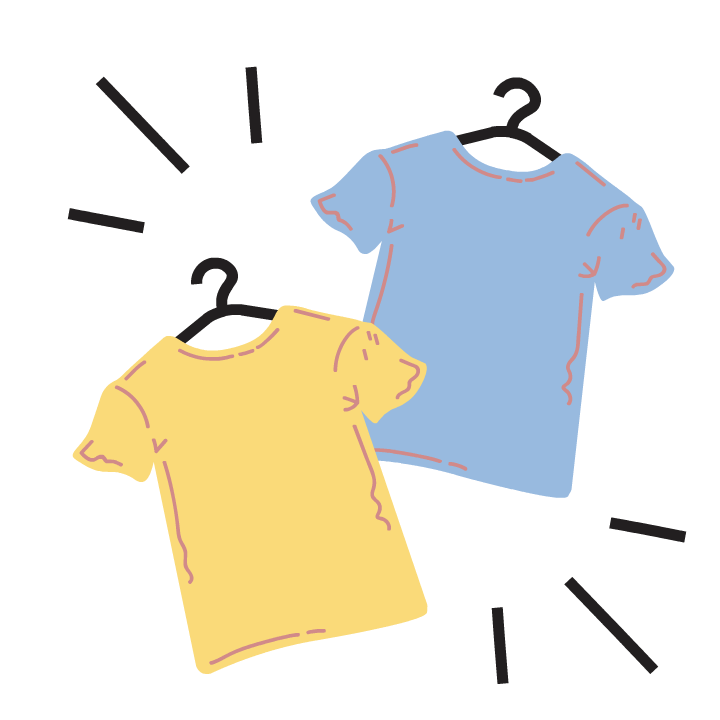

Hand-painted T-shirts has grown from a small start up to an online firm specialising in personalised products serving an international customer base.
The company was founded in 2002 by Dave Liddle and Howard West. The emphasis has always been fulfilling orders meticulously to the highest quality standards. T-Shirts and hoodies are the stock in trade for garments alongside babywear. The shopper is guided through the easy to use ordering process. Buyers upload their own photos and have access to a wide range of bespoke designs as well as an array of fonts.